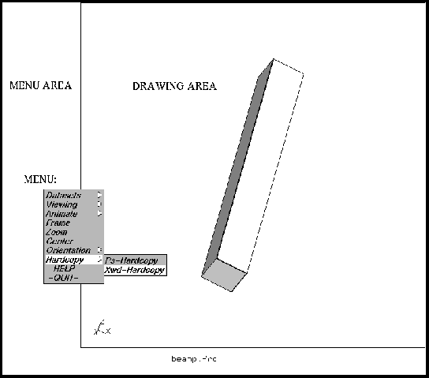

Next: Datasets
Up: CalculiX USER'S MANUAL -
Previous: Keyboard
Contents
Menu
The main menu pops up when pressing the left mouse-button inside the menu-area (figure 3). It should be noted that there are equivalent command-line functions for most of the menu-functions. This can be used for batch-controlled post-processing. Next the entities inside the main menu will be explained:
Figure 3:
structure of the main-menu
|  |
Subsections
root
2017-10-07